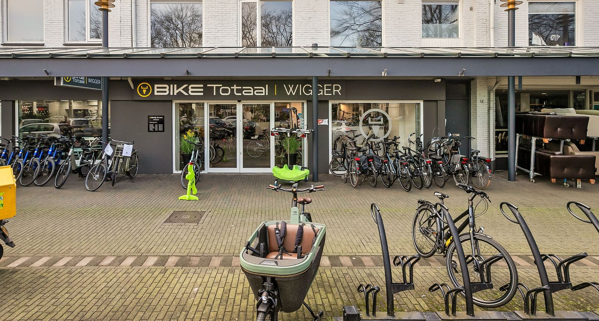
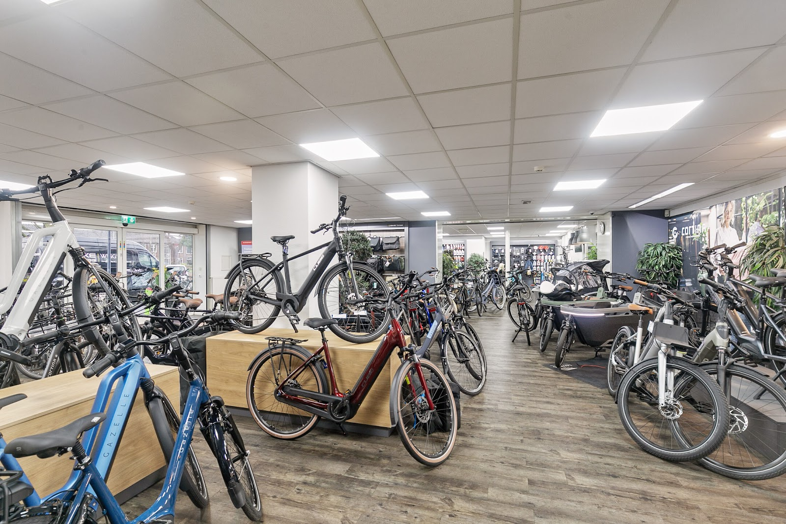
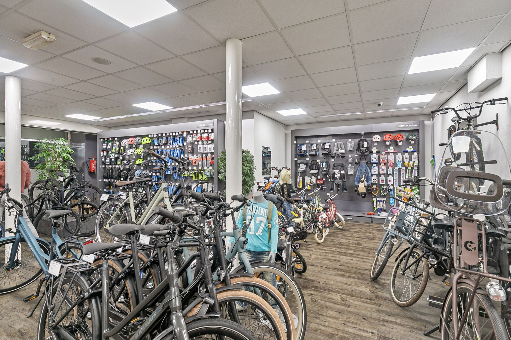
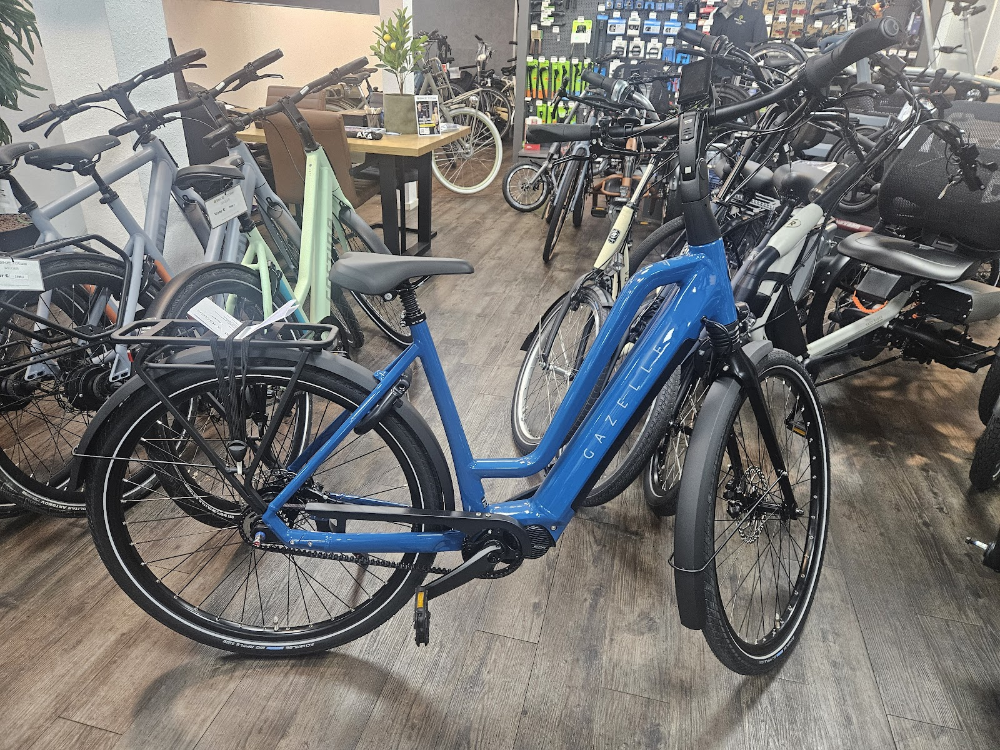
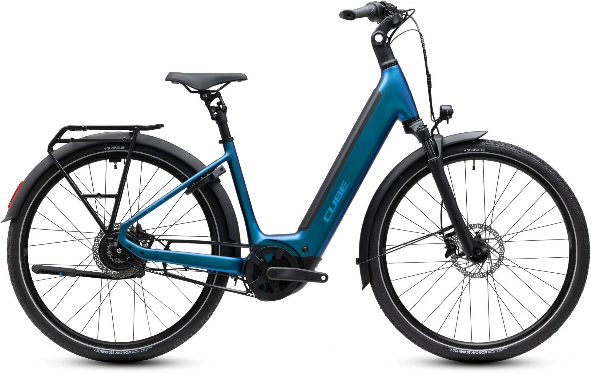
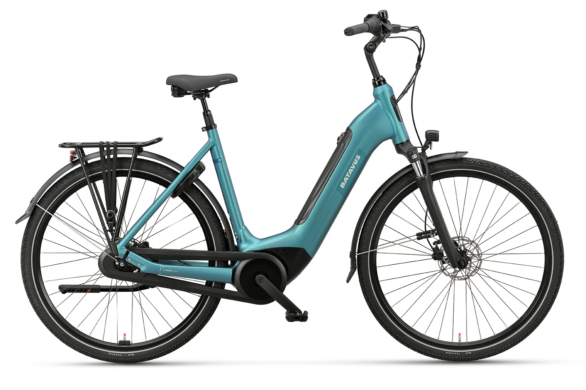
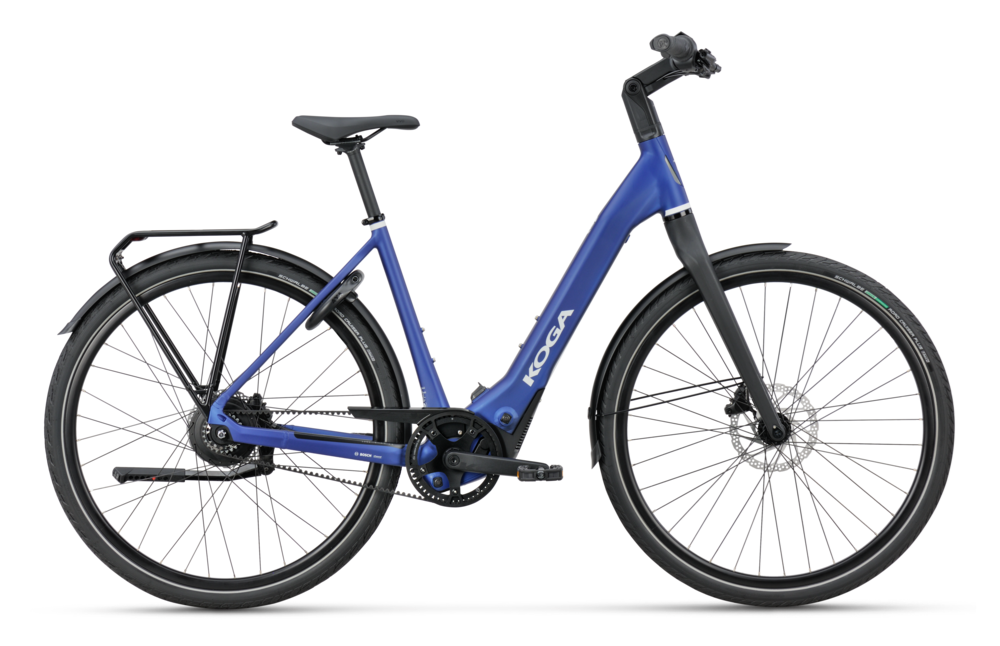
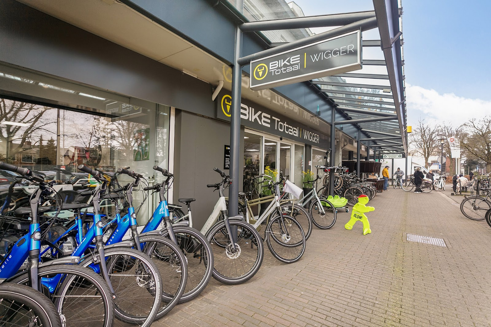
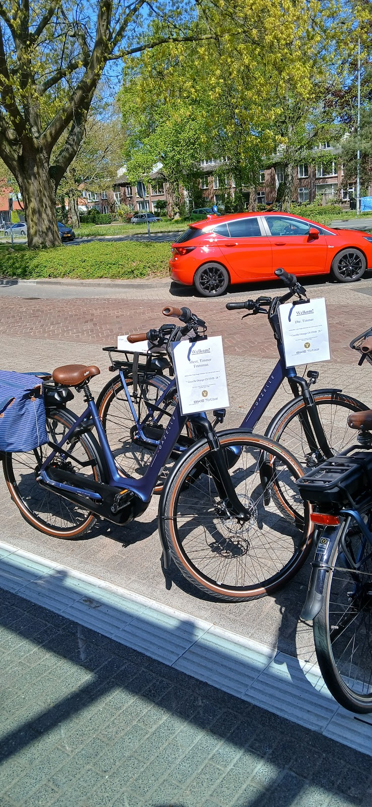

Fietsenwinkel en werkplaats, Deventerweg 10, Harderwijk
Wigger
Een nieuwe fiets uitzoeken, een proefrondje maken of je fiets laten nakijken. Onze specialisten denken met je mee, voor en na je aankoop.
Ma 10:00 tot 18:00, di t/m do 9:00 tot 18:00, vr tot 20:00, za tot 17:00. Zondag gesloten.

Een volle vloer om uit te kiezen
Zoek je een nieuwe fiets in Harderwijk? In onze winkel staat een ruime keuze, van stadsfiets tot bakfiets. Je loopt rustig rond, wij vertellen je eerlijk wat bij jouw ritten past en je mag gewoon een rondje proefrijden voor je beslist.
- Soorten fietsen
- Stadsfietsen, elektrische fietsen, transportfietsen, kinderfietsen en bakfietsen. Ook tweedehands en outlet.
- Merken
- Gazelle, Cube, Cortina, Batavus, Dutch ID, Urban Arrow, Sparta, QiO en Koga.
- Oude fiets over?
- Neem hem mee, inruilen kan altijd.






Fiets kapot? Breng hem langs.
Trapondersteuning die hapert, een versnelling die doorslaat of gewoon tijd voor een beurt: breng hem naar onze werkplaats. Door je fiets op tijd te laten maken voorkom je dure reparaties. Duurt het wat langer? Zeg bij het maken van de afspraak dat je een vervangfiets nodig hebt.
- ReparatieOok van elektrische fietsen
- OnderhoudServicebeurten en onderhoudspakket
- VervangfietsZolang de jouwe bij ons staat
- Fiets- en zadelmetingZodat je goed zit
- FietsverhuurOok e-bikes
- Fietslease en verzekeringVraag naar de mogelijkheden
Bij een nieuwe fiets zit dit er altijd bij
- Je fiets wordt rijklaar geleverd: remmen, versnelling, verlichting, stuur en zadel nagekeken.
- Montage van accessoires is inbegrepen.
- De eerste servicebeurt is gratis, daarna korting op je volgende beurten.
- Een vervangfiets als de jouwe even moet blijven.
- Zit je niet fijn? Zadel-omruilgarantie, en fiets-omruilgarantie.
- Vijf jaar dealergarantie op e-bikes.
Niet bij actieprijzen. De vijf jaar garantie geldt niet voor elektrische bakfietsen. Vraag in de winkel naar de voorwaarden.

Klanten komen terug voor hun volgende fiets
4,5 uit 111 reviews op Google

"Dank voor de goede service de afgelopen jaren. Daarom bij Bike Totaal Wigger weer twee nieuwe fietsen gekocht."
"Gekomen voor een onderdeel van een stuurpen die drie andere fiets zaken niet op voorraad hadden. Bij Wigger hadden ze deze nog wel liggen en ik werd vakkundig geholpen en dat ook nog voor een hele eerlijke prijs"
"Ruime sortering fietsen maar belangrijkste is zeer klantvriendelijk en behulpzaam. Daarom weer hier een nieuwe fiets gekocht."
"Al jaren onze vaste fietsenmaker professioneel vriendelijk en hebben verstand van zaken zelfs als ze het erg druk hebben maken ze tijd voor je tussen door wij raden iedereen aan om naar wigger te gaan"
"Keer op keer heb ik uitstekende ervaringen in deze zaak. We hebben erg goed advies gehad over de aanschaf van onze nieuwe fietsen en zijn daar, na een jaar, nog steeds heel tevreden over. Maar ook de service bij reperaties (helaas kortgeleden een klein ongelukje gehad met één van de fietsen) is uitstekend."
Openingstijden
| Maandag | 10:00 tot 18:00 |
|---|---|
| Dinsdag | 09:00 tot 18:00 |
| Woensdag | 09:00 tot 18:00 |
| Donderdag | 09:00 tot 18:00 |
| Vrijdag | 09:00 tot 20:00 |
| Zaterdag | 09:00 tot 17:00 |
| Zondag | Gesloten |
Vrijdag ben je welkom tot 20:00, handig als je na het werk een proefrit wilt maken.